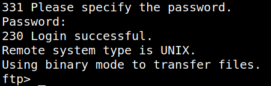
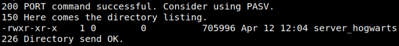

3.2 FTP
This program might suffer from a buffer overflow exploit. However, we're not sure though. Now, let’s download the file called “server_hogwarts” from the open FTP.
1. There's a FTP port open. Let's see what we can get.
$ftp
ftp> open 192.168.12.20
Name (192.168.12.20:kali): Anonymous
ftp> open 192.168.12.20
Name (192.168.12.20:kali): Anonymous
We can login as “Anonymous” with no password.
Output:

2. List the content.
ftp> dir
Note: If you get the “500 Illegal PORT command." run “pass” command before “dir”.
Output:

3. Get the “server_hogwarts” file content .
ftp>get server_hogwarts
ftp>exit
ftp>exit
You have the “server_hogwarts” on your Kali Machine.